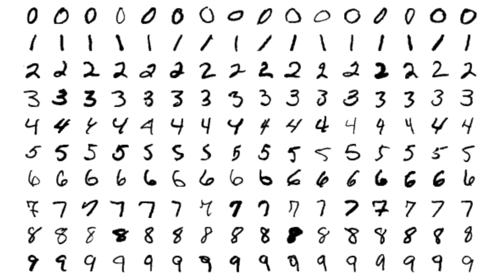

Art generation with Neural Style Transfer
A 19 layer VGG convolutional neural network that recreates images in the style of classical paintings.
Below are the original (lef) and model generated (right) images of a bridge captured at night time using my mobile phone.
The image on the right is rendered in the style of Van Gogh's famous painting The Starry night.
Reduced bias in recidivism prediction data for analyzing criminal’s risk of re-offending and increased fairness index from 44% to 78%.
Model was trained to analyze a the COMPAS recidivism predictions of more than 10,000 criminal defendants in Broward County, FLorida and compared to actual recidivism rates over a period of two years.

Created a machine learning model using KNN technique to predict handwritten digits with more than 96% accuracy.
MNIST dataset used for this project contained over 70,000 64x64 images of handwritten digits.
Predictions were made by calculating Euclidean distances to find K nearest neighbors and using maximum voting strategy.